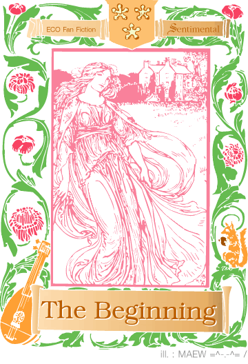

THE BEGINNING
ภายในโบสถ์เล็กๆ ถูกประดับประดาอย่างสวยงามภายใต้แสงแดดยามเช้าที่ลอดผ่าน หน้าต่างกระจกสีสันต่างๆ ให้บรรยากาศดูผ่อนคลาย เหมือนดั่งสรวงสวรรค์ก็มิปาน
“โปรดนั่งเถิดลูก” น้ำเสียงที่อ่อนโยนพร้อมกับรอยยิ้มดูน่าเลื่อมใสยิ่งนัก บาทหลวงวัยชรากล่าว
ทุกคนอยู่ในความสงบและค่อยๆหาที่นั่งอย่างเชื่อฟัง บาทหลวงกล่าวต่อ “ลูกทั้งหลายพวก
เรามาพร้อมกันในวันนี้ เพื่อทำพิธีต้อนรับผู้แสวงหา และแลกเปลี่ยนครุภัณฑ์ธัญญาหาร ซึ่งนำ
พามาเพื่อหล่อเลี้ยงคนในหมู่บ้านของเรา โปรดจงสวดภาวนาอ้อนวอนต่อทวยเทพพยาดา ให้
คนเหล่านั้นได้รับการคุ้มครองจากองค์เทพทั้งหลาย เดินทางกลับมายังเคหสถานบ้านเมืองเกิดด้วยความปลอดภัยเถิด”
ข้างๆหลวงพ่อมีหญิงสาวสวยหมดจด ในชุดพิธีสีชมพูอ่อนๆ ลูกไม้ระบายประดับประดา เหมือนนางฟ้าบนดินก็มิปาน “มาเรียได้เวลาแล้วลูก เหล่าผู้เดินทางน่าจะมาถึงในไม่ช้า” มาเรีย ก้าวออกมาเธอดูเป็นคนละคนกับ...
........................................................................................................
ย้อนความไปเมื่อสิบกว่าปีก่อน
ในราตรีที่เหน็บหนาวย่างเข้าสู่ฤดูกาลของเหมันต์ ผืนฟ้าและผืนป่าถูกโลมไล้ไปด้วยดวามมืดมิดแห่งรัตติกาล หากแต่ว่าเสียงผู้คน และคบไฟจำนวนไม่น้อย บดบังความสงัดเงียบของผืนป่าอย่างที่ไม่เคยเป็นมาก่อน เสียงเคาะไม้ดังระงมทั่วหมู่บ้านจากบนยอดห้างร้านสูง ซึ่งเป็นที่เฝ้ายาม และระวังภัยให้กับหมู่บ้านเล็กๆแห่งนั้นทำให้ผู้คนในหมู่บ้านนั้นกลับตื่นตัวมากยิ่งขึ้น สอดแทรกไปด้วยเสียงตะโกนของชายวัยกลางคนร้องเตือนคนในหมู่บ้านบอกถึงเหตุผิดปรกติบางอย่าง
"ข้าเห็นเงา อยู่ใกล้ๆต้นสนใหญ่ทางตะวันออก" เสียงดังกึกก้องผ่านริมฝีปากที่มีหนวดเครารุงรังของเขา พร้อมทั้งชี้นิ้วบอกตำแหน่งอย่างกระวนกระวาย
ชาวบ้านหนุ่มประมาณ3-4 คน ในมือของพวกเขากำคบเพลิง จอบเสียมหรืออะไรที่พอหยิบจับเป็นอาวุธได้ ค่อยๆเดินไปยังที่ชายวัยกลางคนชี้บอกตำแหน่ง อย่างระมัดระวัง ดวงตาพวกเขาดูหวาดกลัว
แต่แล้วภายใต้แสงไฟวูบวาบจากคบเพลิง ปรากฏร่างคน นอนคว่ำหน้า ทำให้เห็นปีกคล้ายปีกนกคู่ใหญ่ที่ด้านหลังของเขา บนหัวมีวงแหวนแห่งแสงสว่าง ใช่แล้ว..เขาเป็นชนเผ่า “ทีทาเนีย” ชายหนุ่มนอนสลบไม่ไหวติง เรือนผมสีเงินตรงบริเวณปลายผมแซมด้วยสีทองดูแปลกตานัก มือข้างหนึ่งของเขากำ อะไรบางอย่างไว้แน่น ร่างกายของเขาดูบอบช้ำเหมือนกรำศึกมาอย่างหนัก
ใกล้ๆตัวของชายหนุ่มเรือนผมสีเงิน มีมังกรตัวสีแดงใหญ่องอาจน่าเกรงขามหยุดยืนนิ่ง นัยตาของมันเต็มไปด้วยความห่วงใยเจ้าของร่างที่เหนื่อยอ่อน ตามลำตัวและสีข้าง เต็มไปด้วยสัมภาระมากมาย ทั้งอาวุธ โล่ห์ ของยังชีพต่างๆ บนหลังของมัน มีอานขนาดใหญ่ ที่เป็นเครื่องแสดงว่ามันเป็นสัตว์เลี้ยงใช้เป็นพาหนะ ทว่าบนอานนั้น...
“ เฮ้ย!!! ทุกคนบนมังกรมีเด็ก ” ชาวบ้านหนึ่งในนั้นตะโกนลั่น
บนอานนั้นมีตระกร้าหวายใบใหญ่ ภายในมีผ้ารอง ห่อหุ้มตัวเด็กน้อยอายุราวๆ หนึ่งขวบที่นอนหลับสนิท...
วันเวลาผ่านไป จนทุกคนในหมู่บ้านแห่งนั้นเหมือนจะลืมเลือนเรื่องราวในคืนนั้นเสียหมดสิ้น